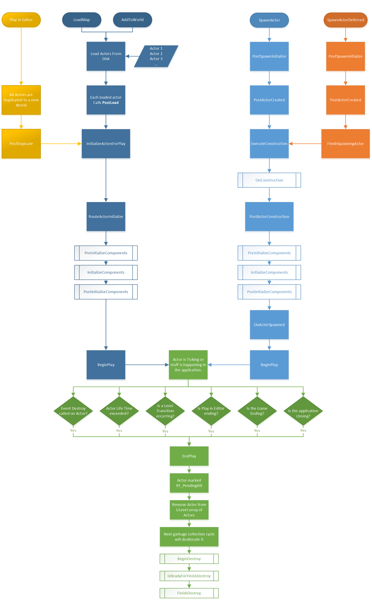

关于Actor的生命周期，与很多初始化的操作相关联，准备整理到这篇文章中。
Actor Lifecycle
首先是官方文档。

记录一些使用
Actor的生成
SpawnActor
在C++中如何进行一个Actor的生成
SpawnActor生成对象是c++的情况
FActorSpawnParameters这个必要参数的各个属性含义还不明白1
2
3
4
5
6
7
8
9
10
11
12
13FActorSpawnParameters params;
// 必要に応じてパラメーターを設定する。
params.bAllowDuringConstructionScript = true;
params.bDeferConstruction = false;
params.bNoFail = true;
params.Instigator = this;
params.Name = { };
params.ObjectFlags = EObjectFlags::RF_NoFlags;
params.OverrideLevel = nullptr;
params.Owner = this;
params.SpawnCollisionHandlingOverride = ESpawnActorCollisionHandlingMethod::AlwaysSpawn;
params.Template = nullptr;
生成：1
2
3
4
5
6
7
8// 事前に用意した params と必要な SpawnActor のオーバーロードを使う。
// ASomethingActor は必要に応じて #include "SomethingActor.h" など参照可能にしておく。
auto something =
GetWorld()->SpawnActor< ASomethingActor >
( GetActorLocation()
, GetActorRotation()
, params
);
SpawnActor生成对象是Blueprint的情况
跟上面的文章有些不一样的地方是构造函数里并不会把蓝图类的路径写死到程序里，这并不利于代码的维护
首先是指定我们需要生成的蓝图类1
2
3
4
5protected:
// 例えば目的の Blurprint クラスが AStaticMeshActor ならそのオブジェクトの SpawnActor 用に参照させるオブジェクトの保持はこんな感じ。
// （よりゆるくは AActor* でもよい。）
UPROPERTY(EditDefaultOnly)
TSubclassOf< class AStaticMeshActor > something_object;
对指定的蓝图类进行生成1
2
3
4
5
6
7
8// 仕込みで用意しておいた something_object を使う SpawnActor のオーバーロードを使う。
auto something =
GetWorld()->SpawnActor< AStaticMeshActor>
( something_object // <-- ここで UClass* なオブジェクトを渡すために事前の仕込みが必要
, GetActorLocation()
, GetActorRotation()
, params
);
也不是说上面的文章就是不对的，只是个人的使用习惯而已。
SpawnActorDeferred
遇到了一个Actor的生成问题，不过关于物体的动态生成一直都是一个非常重要的问题。
首先看一下GASDocumentation中的一段代码：1
2
3
4
5
6
7
8
9
10
11
12// .h
UPROPERTY(BlueprintReadWrite, EditAnywhere, Meta = (ExposeOnSpawn = true))
float Range;
UPROPERTY(BlueprintReadWrite, Meta = (ExposeOnSpawn = true))
FGameplayEffectSpecHandle DamageEffectSpecHandle;
// .cpp
AGDProjectile* Projectile = GetWorld()->SpawnActorDeferred<AGDProjectile>(ProjectileClass, MuzzleTransform, GetOwningActorFromActorInfo(), Hero, ESpawnActorCollisionHandlingMethod::AlwaysSpawn);
Projectile->DamageEffectSpecHandle = DamageEffectSpecHandle;
Projectile->Range = Range;
Projectile->FinishSpawning(MuzzleTransform);
Deferred Spawn
这种生成Actor的方法被这样称为
An Actor can be Deferred Spawned by having any properties set to “Expose on Spawn.”
SpawnActorDeferred - meant to spawn procedural Actors, allows additional setup before Blueprint construction script.
Everything in SpawnActor occurs, but after PostActorCreated the following occurs:
- Do setup / call various “initialization functions” with a valid but incomplete Actor instance.
- FinishSpawningActor - called to Finalize the Actor, picks up at ExecuteConstruction in the Spawn Actor line.
就像上面描述的和那样的使用方法。
Expose on Spawn
上面的例子提到了了这个属性修饰符，在Blueprint中也能找到这个条目。
感觉就是因为这个属性才会用到DeferredSpawn，经常在Blueprint中会有SpawnActorByClass的时候，当我们在C++使用了上面的修饰符和写法之后，在这个函数的里面就会出现”Exposed“属性。
所以就像上面说的那样，允许在BP的Construction之前做一些设置。
嘛先记住吧总归是有好处的。
按照上面的文章内容所说，在蓝图中设置的时候除了Expose on Spawn需要check之外，instance editable一项也需要被check，理由暂时不太清楚。
注意事项
ActorComponent的InitializeComponent调用时机
最近遇到了一个调用顺序的问题，转来转去才发现是自己没有好好看源码。
添加的ActorComponent中，使用InitializeComponent来初始化数据，然在附着的Actor上的PostInitializeComponents函数来使用数据，本来应该是没有问题的，但是一运行就崩溃，调查了一下才发现，InitializeComponent函数被调用是有条件的：bWantsInitializeComponent这个变量需要被设置。
至于解决方案有两种：
- 设置
bWantsInitializeComponent = true在默认的构造函数里 - 使用
const FObjectInitialize&构造函数
参考链接：
- InitializeComponent not firing on spawn
I ran into a similar issue. This was tricky to fix. Here are the things I did to get it to work. You may need to do one or more of these:
- Needed to use const FObjectInitializer constructor not default constructor since UE4 did not call default constroctor.
- Needed to do stuff in InitializeComponent not constroctor. I think the constroctor is called once when you put an object in the map or something. Stuff that you want to happen each game probably should go in InitializeComponent.
- Needed to set bWantsInitializeComponent to true in constroctor so that InitializeComponent is called.
- Needed to clean out binaries directory for things to work right. Delete everything in Binaries since compiling C++ doesn’t always cause that to be refreshed properly.
Good luck,
-X
引擎源码注释：1
2
3
4
5
6
7
8
9
10
11
12
13
14
15
16
17
18
19
20
21
22
23
24
25
26
27
28
29
30
31
32
33
34
35
36
37
38/**
* Actor is the base class for an Object that can be placed or spawned in a level.
* Actors may contain a collection of ActorComponents, which can be used to control how actors move, how they are rendered, etc.
* The other main function of an Actor is the replication of properties and function calls across the network during play.
*
*
* Actor initialization has multiple steps, here's the order of important virtual functions that get called:
* - UObject::PostLoad: For actors statically placed in a level, the normal UObject PostLoad gets called both in the editor and during gameplay.
* This is not called for newly spawned actors.
* - UActorComponent::OnComponentCreated: When an actor is spawned in the editor or during gameplay, this gets called for any native components.
* For blueprint-created components, this gets called during construction for that component.
* This is not called for components loaded from a level.
* - AActor::PreRegisterAllComponents: For statically placed actors and spawned actors that have native root components, this gets called now.
* For blueprint actors without a native root component, these registration functions get called later during construction.
* - UActorComponent::RegisterComponent: All components are registered in editor and at runtime, this creates their physical/visual representation.
* These calls may be distributed over multiple frames, but are always after PreRegisterAllComponents.
* This may also get called later on after an UnregisterComponent call removes it from the world.
* - AActor::PostRegisterAllComponents: Called for all actors both in the editor and in gameplay, this is the last function that is called in all cases.
* - AActor::PostActorCreated: When an actor is created in the editor or during gameplay, this gets called right before construction.
* This is not called for components loaded from a level.
* - AActor::UserConstructionScript: Called for blueprints that implement a construction script.
* - AActor::OnConstruction: Called at the end of ExecuteConstruction, which calls the blueprint construction script.
* This is called after all blueprint-created components are fully created and registered.
* This is only called during gameplay for spawned actors, and may get rerun in the editor when changing blueprints.
* - AActor::PreInitializeComponents: Called before InitializeComponent is called on the actor's components.
* This is only called during gameplay and in certain editor preview windows.
* - UActorComponent::Activate: This will be called only if the component has bAutoActivate set.
* It will also got called later on if a component is manually activated.
* - UActorComponent::InitializeComponent: This will be called only if the component has bWantsInitializeComponentSet.
* This only happens once per gameplay session.
* - AActor::PostInitializeComponents: Called after the actor's components have been initialized, only during gameplay and some editor previews.
* - AActor::BeginPlay: Called when the level starts ticking, only during actual gameplay.
* This normally happens right after PostInitializeComponents but can be delayed for networked or child actors.
*
* @see https://docs.unrealengine.com/latest/INT/Programming/UnrealArchitecture/Actors/
* @see https://docs.unrealengine.com/en-us/Programming/UnrealArchitecture/Actors/ActorLifecycle
* @see UActorComponent
*/